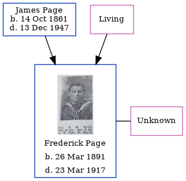

Hetty Camelia Thompson (née Page) 1889 - 1949
[ Home ] | [ Calendar ] | [ Surnames Index ] | [ Census Index ] | [ Family History ]The child of James Page and Elizabeth Sellis, Hetty Page, the third cousin once-removed on the father's side of Nigel Horne, was born in Folkestone, Kent, England on Mar 12, 18891 and married Harold Thompson (a cowman on a farm with whom she had 6 children: Hetty Camelia, Ronald Stanley, Dennis Gordon, Joan Marguerite, Alan Aybery and Peter Geoffrey, along with 2 surviving children) in Elham, Kent, England around Nov 19092. On Apr 2, 1911, she was living at Osborne Villas, Canterbury Road in Folkestone3.
She died on Jul 28, 1949 in Sholden, Kent, England.
Parents
- James Henry was born on Oct 14, 1861
- Elizabeth Ann
Children
- Ronald Stanley was born on Apr 27, 1919
- Joan Marguerite was born on Jul 17, 1924
- Alan Aybery was born on Oct 10, 1926
- Peter Geoffrey was born on Jul 17, 1934
Citations
- England & Wales births 1837-2006 - Findmypast
- England & Wales Marriages 1837-2005 - Findmypast
- 1911 Census for England & Wales - Findmypast (was age 24 and the wife of the head of the household)
Media
England & Wales marriages 1837-2008 - BMD/M/1909/4/AZ/000285/063
England & Wales births 1837-2006 - BMD/B/1889/2/AZ/000434/290
Family Tree
Generated by ged2site. Last updated on Jun 11, 2024